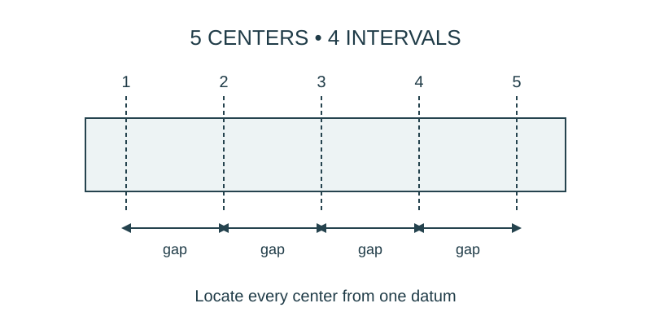

Job 12 · Deliver a buildable job package
A drawing, stock plan, estimate, and paper model another pair can build.
110 minutes • Tape measure + pocket notebook • Name: __________________ Date: __________
Materials: Paper, scissors, tape, tapes, notebooks; prior work orders.

Brief · 12 min
- Choose one previous layout or template. What information did the builder still have to ask for?
- Set up a dated notebook spread: sketch and readings on the left; calculation, decision, test, and revision on the right. Mark small sketches NTS unless drawn to a chosen scale.
- Work in pairs and rotate roles. Each student keeps an individual notebook and performs a tool action and a calculation.
Measure · 18 min
- Select a 12 × 18 in tabletop organizer footprint or teacher-approved equivalent.
- Use two dividers running the 12-in direction and spaced equally across the 18-in direction; divider thickness is neglected in the initial paper model.
- Record the user need, dimensions, assumptions, and a datum.
Plan · 20 min
- Draw plan and elevation, including divider height of your choice with units.
- Prepare a paper cut list and a simulated quote using $0.10 per sheet and $0.02 per 6-in tape segment.
- Calculate material needs from a piece layout, rounding purchases up.
Worked example
Two divider centerlines split an 18-in length into three equal bays in a zero-thickness model. Locate them. Three bays → three intervals; interval = 18/3. Centers at 6 and 12 in from datum. Real divider thickness would reduce clear bay width.
Make · 28 min
- Give the package to another pair; they build the paper organizer without seeing your model.
- Record every clarification the builder requests.
- Revise the package and have the builder demonstrate how the revision resolves one uncertainty.
Test · 20 min
- Model agrees with the specified footprint and divider positions within a stated classroom tolerance.
- The cut list and quote match the model.
- Each student independently explains one calculation and one limitation of the paper model.
Explain · 12 min
- Complete the individual exit below before discussing answers.
- Add the test result, revision, and notebook page reference to your response. Use the notebook as evidence rather than retyping every page.
- Save the three selected responses and submit the lesson for teacher review. Show your physical work and notebook to the teacher. Clean up and return shared supplies.
Individual exit
A revised zero-thickness organizer has a 24-in length divided into four equal bays. How many internal dividers are needed, and where are their centerlines? Name a package revision supported by your builder’s feedback.